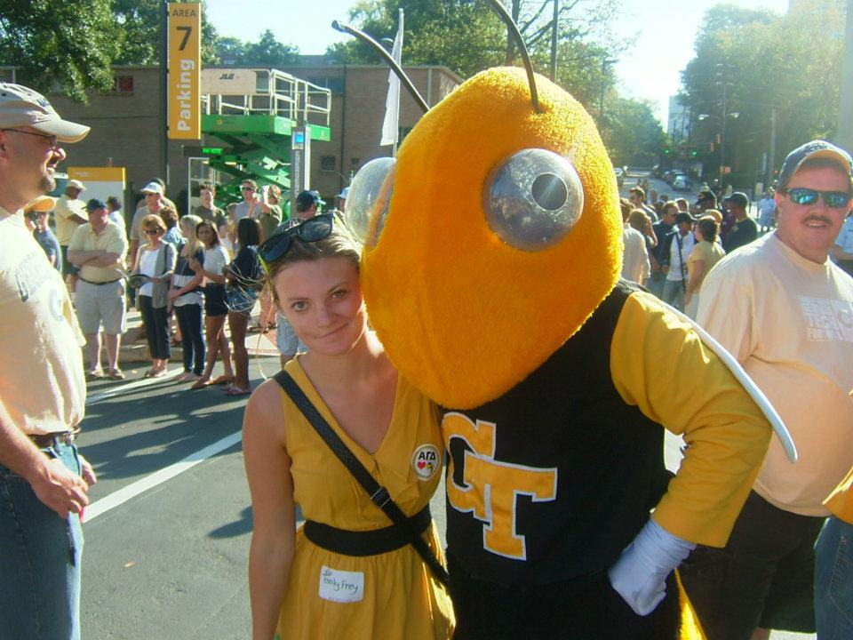

My name is Emily Keen. I am a full stack web developer inseek of a fulltime position.
I was born in Morristown, New JerseyI grew up in Peachtree City, GA. Peachtree City is unique and has golfcarts.

I attended Georgia Tech and graduated in 2013.
After college I moved out to Plano, Texas to work for Capital One. I worked at Capital One until December 2016.
I am currently attending the Georgia Tech Coding Boot Camp to transition my career from hardware to software.
In my free time I enjoy spending time with my husband, two cats and Golden Retiever. I also enjoy watching the news and keeping up with important events domestic and international.